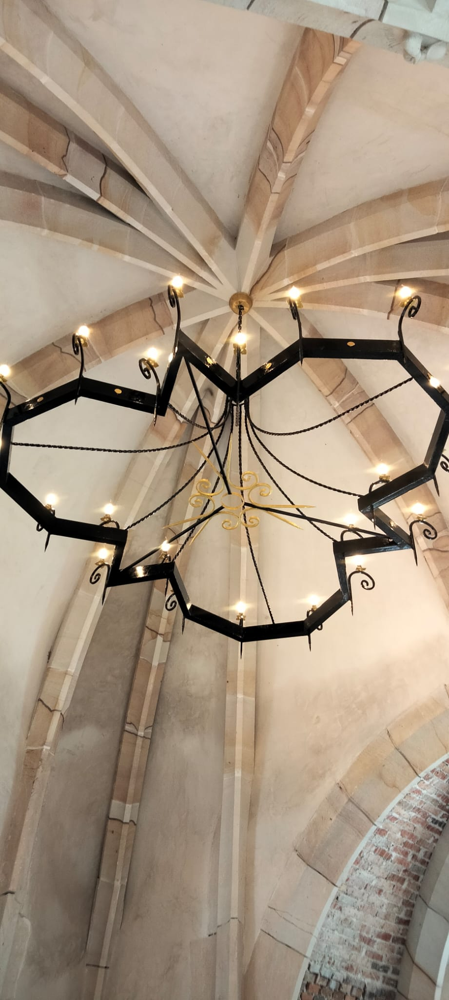
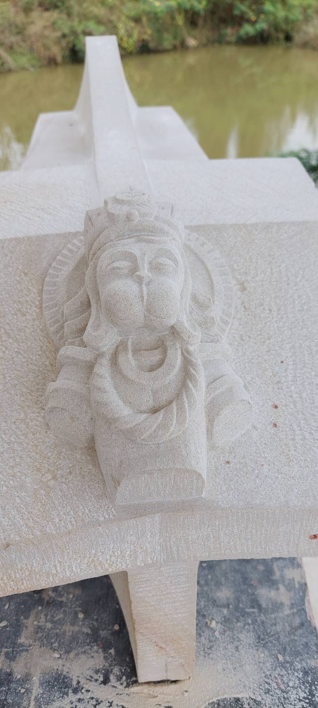

Why build a chapel here?
The idea came from founders who practise meditation. They wanted to offer participants and visitors a place to follow a spiritual path.
The Gothic design and the use of stone follow a chapel in Planès, in the French Pyrenees, chosen for its simplicity and quiet. It is a transmission from the Middle Ages — and, equally, a landmark for future generations: a place to experience humility, contemplation, and harmony.

How was it built?
The design is by the project founder. Construction was led by a French stonemason, a Compagnon du Tour de France, who trained five Thai workers in stone cutting and carving.
They reached the level of stonemason builder in three months. The same level usually takes several years for apprentices in France. With that small team of five, the chapel was finished in three years.


What materials were used?
Local materials were used wherever possible. The stone comes from a quarry in Saraburi. It is about four times harder than the stone used for cathedrals in France, so it should last longer. The limestone is from Thailand. Roof tiles are from Ayutthaya.
The stained glass was made in Bangkok. The glass itself comes from France, from the last workshop that has produced stained-glass material since the Middle Ages. One window shows the master builder’s key.




Stone set without cement
Every stone support was carried on a wooden structure while the ribs and vaults went up. The stones are assembled without cement — limestone mortar only — so the masonry can breathe and move.
Each stone was cut to fit. When the courses were lined up, no adjustment was needed. Heads are carved on the keystones of the arcades, including Hanuman. The vaults are stone ribs, then red brick, then limestone plaster.



Who can use the chapel?
The chapel is dedicated to Shri Mataji Nirmala Devi, incarnation of the Adi Shakti. Everyone may use it. There is no religious restriction.
What makes this unique to NHVK
- The only chapel in Thailand built with this traditional stonemason craft and these materials
- The only chapel in the world dedicated to Shri Mataji Nirmala Devi
- Set on an island in the project lake — part of the landscape, as if it had stood there for a long time
Plots with a direct view or access to the chapel island are described in land pricing and available plots.
Frequently asked questions
See the plots that look onto the chapel island.
View Available Plots